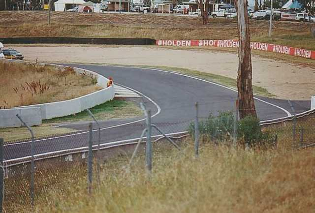
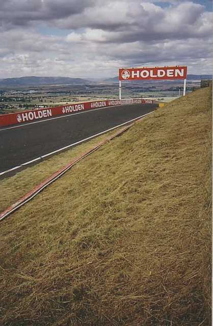
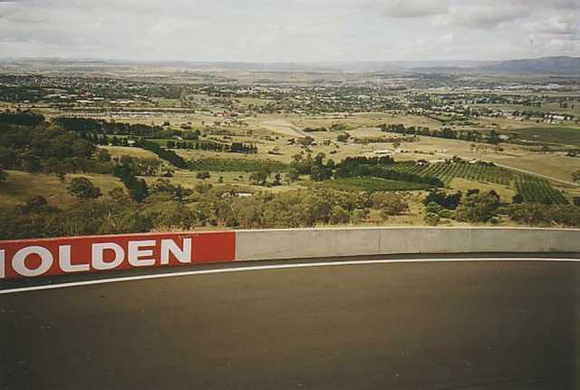
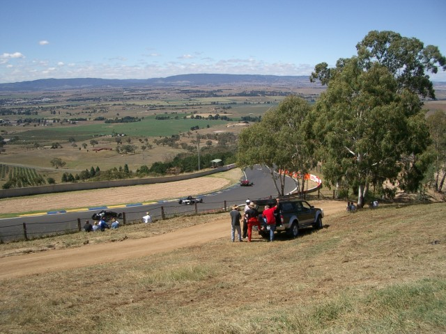
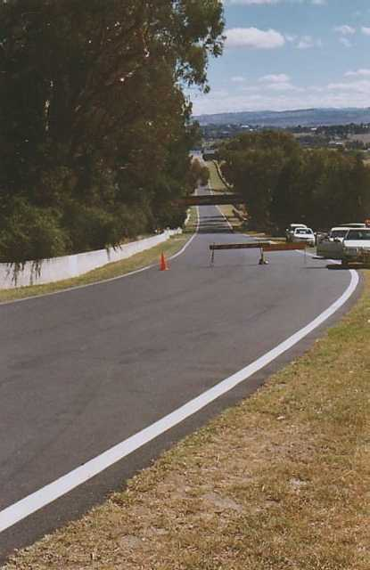

Numbers on the map represent the location where the photographs were taken. Scroll down to view the photographs.
Mount Panorama - McPhillamy Park to Conrod Straight
|| Contents || Hell Cnr. to John Hinxman Vista | McPhillamy Pk to Conrod Str. || Home ||
Numbers on the map represent the location where the photographs were taken. Scroll
down to view the photographs.
Return to racingcircuits.net's Photo Archive Main Index

7 - McPhillamy Park. It's a lot faster than it looks, partly because of
the tele lens I suppose. One of life's character-building experiences used to be flagging
here in the days of open-wheeler racing. There is a hump between Sulman Park and
McPhillamy, and by the time you could get the blue flag out the F5000 McLaren was just
about alongside the poor twit in the Formula Ford. Add to this the fact that the run-off
area was not there, and the old wooden 'safety' fences were parallel with and about a yard
back from the edge of the bitumen, and you had all the ingredients for an exciting day at
the races.

8 - Looking towards Skyline. It is literally that. You simply can't see
anything of the track beyond until you are right there and already have the requisite
amount of right lock. It is a bit sobering even at the usual non-race speed limit of
60km/hr. The racing drivers are doing somewhere between 120 and 150!

9 - Panoramic (pun intended) shot. The first hump on Conrod is clearly
visible at the end of the orchards. The purpose of this shot is to give some impression of
the distances and height separations around this circuit, as well as showing that part of
Conrod not visible in #..

10 - The Esses. [Click to Zoom]

11 - From the kink on Conrod down to the first hump. The barriers are
there to keep the oi polloi out of the way of the hillclimb competitors, and an official
not visible at right had already ordered me back out of this area. Fortunately, he had
sufficient forbearance to give me a few seconds to take this picture.
©2005 Mark Taylor & Ian Holden. Reproduced here with kind permission.